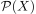
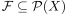
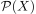
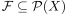
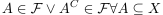
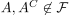
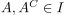
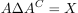

Ultrafilter als maximales Ideal
1. Satz
Sei  ein topologischer Raum und  die Potenzmenge als Ring und 
TFAE:
ein topologischer Raum und  die Potenzmenge als Ring und 
TFAE:
 ist ein Ultrafilter
ist ein Ultrafilter- ist ein maximales Ideal
2. Beweis
2.1. a)
Sei ein Ultrafilter, so gilt nach der Charakterisierung durch Komplemente.

1
Angenommen , so folgt  und wegen der Abgeschlossenheit gegenüber Addition

2
Und damit